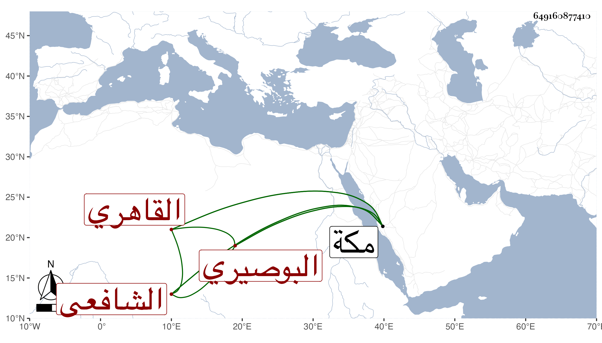

0902Sakhawi.DawLamic.ITO20230111-ara1.EIS1600.649160877410
Biography ID: 649160877410
509
محمد بن جامع بن إبراهيم بن أحمد الشمس البوصيري ثم القاهري الشافعي وسمى شيخنا في إنبائه والده إبراهيم . اشتغل بالفقه والعربية وغيرهما وسمع على التقى بن حاتم جزء أبي على الصفار وعلى المعين عبد الله بن محمد ابن على قيم الكاملية ثلاثة مجالس ابن عبد كويه وعلى المطرز والمجد إسماعيل الحنفي من لفظ الجمال الرشيدي السنن لأبي داود وعلى الزين العراقي في آخرين وحج وجاور بمكة وسمع بها على الجمال الاميوطي مسند ابن أبي أوفي لابن صاعد وانتفع به الفضلاء وكان مذكورا بالولاية واستفيض رؤية بعضهم للنبي صلى الله عليه وسلم وهو يقول من قرأ عليه دخل الجنة فسارع الاماثل ممن لم يكن قرأ عليه لذلك وممن أخذ عنه الوالد وعرض عليه محافيظه بل سافر معه إلى مكة في سنة اثنتين وعشرين وما لقيت أحدا إلا ويذكر عنه أحوالا وكرامات . وقال لى العز الحنبلي كنت أقرأ عليه ابن المصنف فيقرره أحسن تقرير وهو نائم أو نحو هذا ذكره شيخنا في إنبائه فقال كان خيرا دينا كثير النفع للطلبة يحج كثيرا ويقصد الاغنياء لنفع الفقراء وربما استدان للفقراء على ذمته ويوفي الله عز وجل وكانت له عبادة وتؤثر عنه كرامات . مات في سادس ربيع الآخر سنة أربع وعشرين رحمه الله ونفعنا به .
